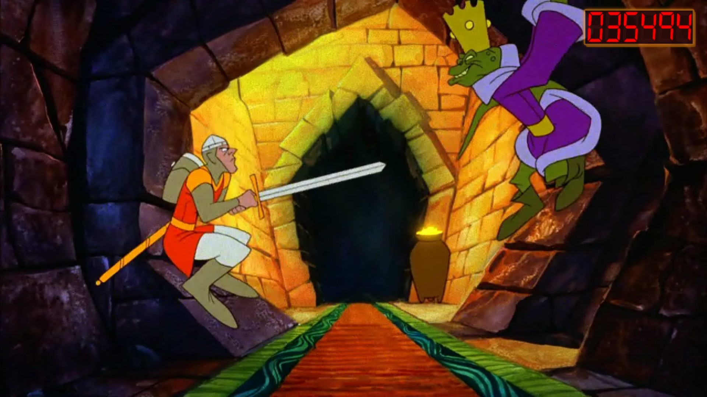
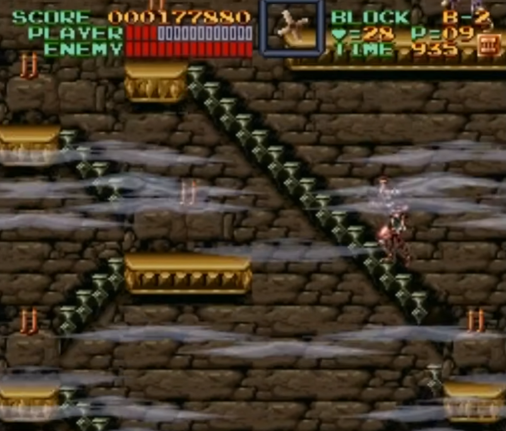

In March, we had a very fun but very generic theme: Bops and Bangers. Every game we suggested and voted for had to have a great and memorable soundtrack. It was a close call between a lot of games, but we ended up deciding on the SNES title Super Castlevania IV.
As I mentioned in my last post, I own a physical copy of Super Castlevania IV for my SNES, and in the past as part of the retro game club, I have already played on my CRT TV setup. That being said, for this month, I played the game entirely on my Miyoo Mini Plus. There are a few reasons for this, but let's just say that in hindsight, I am extremely happy I took this decision.
Designing video games can be a real challenge. What are you trying to optimize? Are you making an artistic piece that is willing to sacrifice gameplay fun to express specific emotions? Are you trying to maximize the fun aspect, sacrificing part of the narrative? Are you making a spectacle, sacrificing some gameplay depth for the sake of a feel good experience? Are you trying to optimize for player retention?
The reality is that most games try to keep a certain level of balance between all of these.
Super Castlevania IV is an entry using the design principles of arcade games.
Arcade games worked in specific ways: put a coin in, play the game until you die, and when you do, put another coin in to continue. Games made for the arcade followed this philosophy: make the player die every few minutes, and the cash will flow in. Keep the game fair - or at least, fair when you know what's coming - and players will be willing to put more coins in. Or maybe just make it look and sound so good that you don't mind dying much. Looking at you Dragon's Lair.

Arcades were so prevalent in Japan at the time of Super Castlevania IV’s release that most developers still designed levels with that mindset. You were buying the cartridge to effectively get an infinite amount of coins, but you still had to play like in the arcade.
You might say that's what people playing video games expected back then, and I might agree with you. But 30 years later, this leaves you with a game that's lost its audience.
Super Castlevania IV was released in 1991 on Halloween, making it the oldest game we've played so far in the club, and the only game released before I was born. It was released for the Super Nintendo, a console that had only just come out in late 1990. The three previous games in the franchise had been released for the NES and were at the time well received by the public, and its fourth entry was equally if not even better received (though it would eventually get eclipsed by its genre-defining sequel Symphony Of The Night).
Super Castlevania IV is an interesting game. True to this month's theme, it has a fire soundtrack, with the remixes in the last stage being absolute ear candy.
The gameplay feels a little clunky at times, but nothing crazy. I got used to it after a few minutes, and mostly felt in control of my actions after a while.
The level design is rather straightforward. It's clear where you're supposed to go, and the challenge ahead is typically laid out simply and straightforwardly.
But there's really one key takeaway.
Back in the 3rd and 4th generation consoles era (1985-1995) there was a phrase that ran around gaming circles: Nintendo Hard. When a game was hard to beat and tested your patience, reflexes, and memory, it was called Nintendo Hard, because at the time, games on Nintendo consoles had a somewhat abrupt skill curve.
Super Castlevania IV is exactly what people meant when they used that phrase. And I would consider this practice borderline unfair. With save states and rewind, this is something I'm able to make somewhat palatable, most of the time. But Super Castlevania IV made me stop even before finishing the game, despite using rewinds and save states liberally.
I was in stage B when I decided giving up was the most sane solution. There are numerous areas that made me want to flip a table, despite playing on the couch.

There were a lot of moments earlier in the game that truly tested my patience as well, but a few minutes and a couple save states allowed me to get through. I can't imagine how frustrating this game must have felt without save states though. The fact that you have lives, and that your equipment and upgrades reset upon death, leads to a game design that makes the game easier when you're good, and harder when you're bad, which is the exact opposite of what you'd want.
We've played a few games of different genres so far in the club, but I think this was definitely the hardest we've played.
I still think Super Castlevania IV is a good game. It reminds me a lot of The Legend of Zelda for the NES, in the sense that I find the early parts of the game very enjoyable, memorable, and deserving to be played even today, but the later parts of the game aged so badly that I think the best thing to do is to stop playing halfway through.
Next month will be an interesting one, as we'll be tackling our first RPG. On a more personal note, I expect this April to be a very busy month, so it's going to be interesting to see how I balance a longer game with my lack of time.
Stay tuned to learn what game we're playing in April!